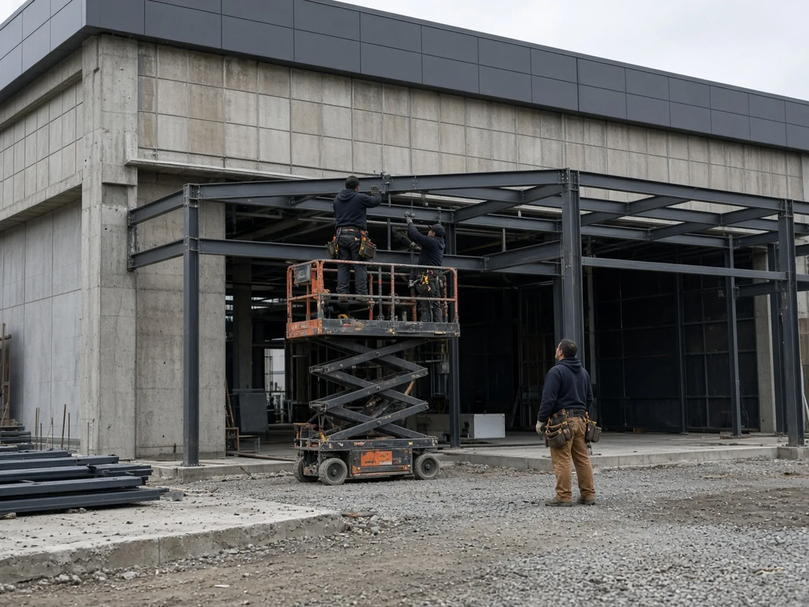
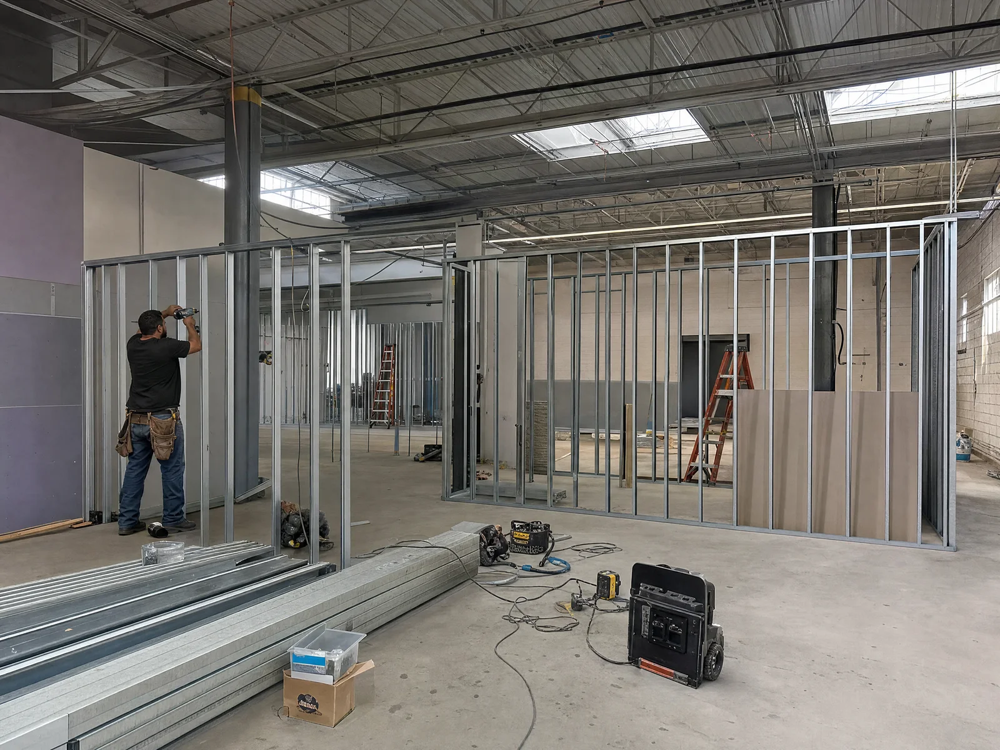

Not every projectfits the standard scope.
For modifications, installations and connected trade requirements that do not fit a standard service label. Describe what needs to change and the surrounding constraints; we help make the scope understandable.
You bring the requirement.
We help define the path.
Every request follows the same visible steps, so you always know where the work stands and who has the next action.
Share the need
Tell us the location, condition, objective and timing.
Review & define the scope
Review available information, clarify the work and discuss the appropriate next step.
Coordinate the work
Coordinate resources, the defined scope and project communication.
Document completion
Review applicable closeout items and communicate where the scope stands.
Describe the outcome.
Then organize the pieces.
Some requirements combine installation, adaptation, protection, removal and finish work in a way that does not fit a single trade category. IVO gives those conversations a place to start, with an emphasis on understanding the desired result and identifying the information that still needs to be resolved.
Make the objective tangible
Explain what the space or component must do differently. A marked photograph, a simple sketch or an existing product specification can communicate the requirement better than a broad service label. Identify which conditions are fixed and where you are still open to an approach.
Identify the dependencies
A proposed modification can affect nearby finishes, attachments, equipment or access. The review should distinguish the work being considered from assumptions about existing conditions. Where specialist information or a design decision is needed, identify who will provide it.
Agree on the handover condition
Define what should be installed, removed, retained or restored and which checks belong to completion. A specific description gives the customer and participating businesses a shared reference when reviewing questions, pricing and the finished result.
An operating area needs a physical modification.
An illustrative requirement: a warehouse or back-of-house space needs a component changed to suit a new operating use. The useful review considers the surrounding activity and the interfaces between removal, installation and finish restoration, rather than treating the proposed item as isolated from the property.
- Document the objective, existing arrangement and constraints.
- Clarify material supply, technical decisions and trade responsibilities.
- Maintain the approved scope and relevant completion evidence.
What IVO can
organize for you.

01 / CapabilityProperty modifications
Bring defined needs for commercial modifications, protective components, signage, finish adjustments or equipment-related property changes. Explain what must work differently and which surrounding features need to remain.
Some commercial requirements are defined by an operating objective rather than a familiar service category. A property may need an area adapted, a component protected or an existing installation changed to suit a different use. Describe the desired result and the constraints around it, even if you are unsure which trades are involved.
The first review separates what is known from what still needs to be investigated. Existing dimensions, attachment points, surrounding materials and the way the area is used can all affect the eventual scope. An unusual request benefits from a clear problem statement before a specific solution is assumed.
Discuss this requirement →
02 / CapabilityConnected scopes
A specialty project may combine removal, preparation, modifications, installation and finish work. Related components can be reviewed together rather than treated as unrelated requests.
A modification may require several tasks in a particular order, such as removal, preparation, installation and restoration of adjacent finishes. Treating these tasks as a connected scope helps identify interfaces between participating businesses and the conditions each one needs before starting.
Explain whether your organization already has a design, specified product or preferred supplier. Where responsibilities are split, identify who will supply materials, verify compatibility and approve the finished result. Clear interfaces reduce uncertainty during pricing and scheduling.
Discuss this requirement →Find the details
you need.
Practical notes on what to send, how the work is organized and how decisions are recorded.
Examples of specialty needs
Examples include adapting an existing commercial area, modifying a warehouse space, adding applicable physical protection or coordinating a non-standard combination of trades.
Commercial examples can include adjustments to a back-of-house area, warehouse space, protective property component or an existing layout. The examples describe categories of need rather than a fixed catalog of solutions. The actual request must be reviewed against the property conditions and the capabilities required to address it.
What to share
Provide the location, objective, current condition, photos and desired timing. Plans, drawings, specifications and bid packages are helpful when available.
Include a sketch or marked-up photograph when it is easier to show the proposed change than describe it. Identify what can remain in place, what must move and any equipment or operations that the change must accommodate. A target date is useful, along with the business reason behind that timing.
01Scope boundaries
The team reviews where the proposed work fits the available capabilities. Clarify inclusions, exclusions, site conditions, access and responsibilities before agreeing to the scope.
An unusual scope can contain assumptions about concealed conditions, existing systems or material suitability. Those assumptions should be identified during review. If design decisions, specialist evaluation or additional information are needed, clarify who will provide them before treating the proposed approach as final.
02Questions & changes
Keep scope questions, revised information and change requests in the project workspace. Logging a change request does not approve additional work or cost.
When a question arises, reference the affected area and the specific decision needed. Attach the relevant drawing or photograph rather than opening several disconnected conversations about the same item. Keep the approved revision identifiable so participating parties can distinguish the current instruction from an earlier discussion.
You’ll know when
we’ll respond.
Response targets are written down by priority, with a separate clock for reply, site visit and next step.
Unsafe or unsecured
- Call answered
- By a person
- Crew on site
- Target within 4 hours in served metros
- Next step
- Temporary securing on the first visit. Written plan within 24 hours
Broken storefront or entry, active leak, impact damage, an opening that can't be locked.
Affecting operations
- Reply
- Within 2 business hours
- On site or assessed
- Within 1 business day
- Next step
- Fix or written plan within 2 business days
A failed door closer, a damaged fixture in a public area, a repair blocking a tenant.
Repairs & turnovers
- Reply
- Same business day
- Site visit or scope call
- Within 2 business days
- Written estimate
- Within 5 business days of a complete scope
Drywall and paint repairs, suite make-ready, hardware, flooring and finish work.
Planned work
- Reply
- Within 1 business day
- Bid / no-bid decision
- Within 2 business days
- Proposal
- By the bid deadline, or a date agreed with you
Tenant improvements, renovations, GC trade packages and multi-trade projects.
Business hours are Monday–Friday. Arrival times depend on location, access and safety conditions, and we always give you a confirmed estimate on the call. A submitted form does not dispatch a crew, so for emergencies always call.
Before the next step.
Still have a question? Call (206) 539-9549 or email office@ivoservgroup.com.
What if we do not know which trade the requirement belongs to?
Describe the current condition and the result you need. The purpose of the first discussion is to clarify the requirement, including whether additional information or specialist review is needed before a service path can be identified.
Can we use a product or supplier we already selected?
Share the specification, dimensions, lead-time information and the responsibilities you expect the supplier to retain. Compatibility, installation requirements and the boundary between supply and other work should be clarified for the actual scope.
How do we keep revisions from becoming confusing?
Reference the affected area and identify the decision being requested. Keep the current drawing or instruction with the project, and distinguish approved revisions from earlier options or unanswered questions.
Explore other
service paths.
Commercial Construction
Tenant improvements, renovations, build-outs and defined trade packages.
Property Services
Repairs, turnovers and ongoing support that keep properties leasable and running.
Emergency Property Response
Temporary securing and follow-up repair planning after unexpected damage.
Start with one project.
Let us earn the next one.
Tell us what the property needs. We’ll help identify the appropriate next step.